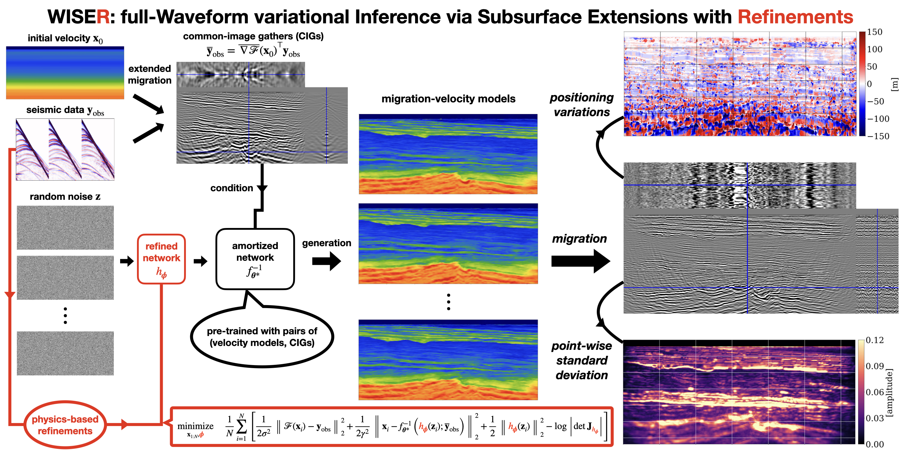
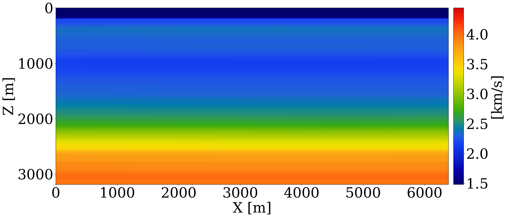
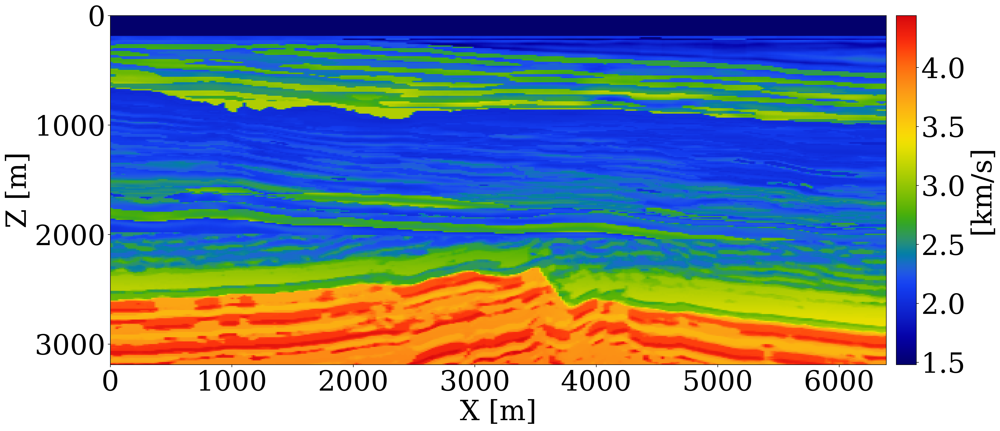
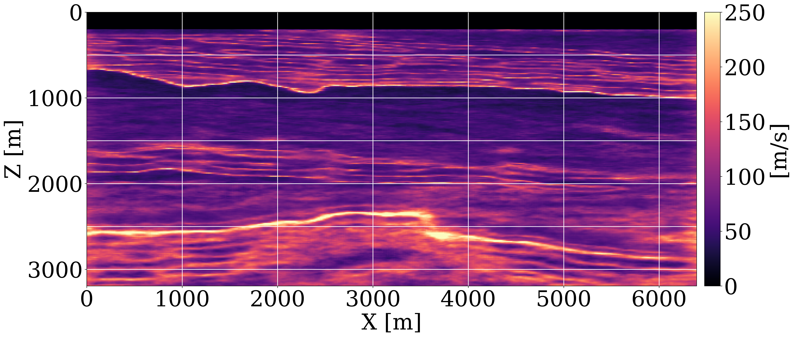
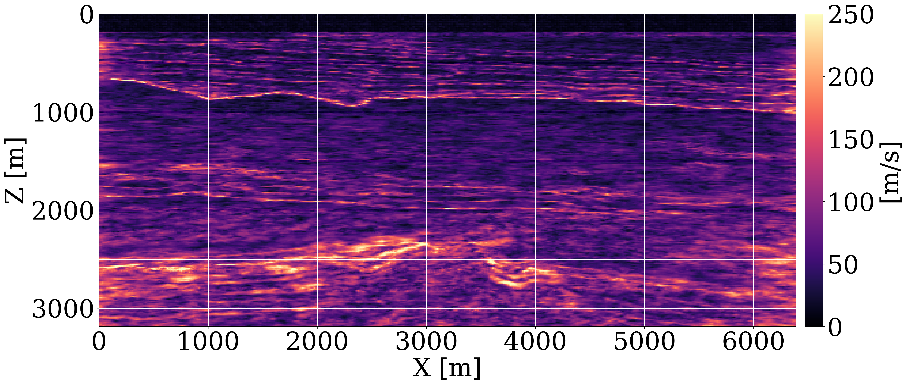
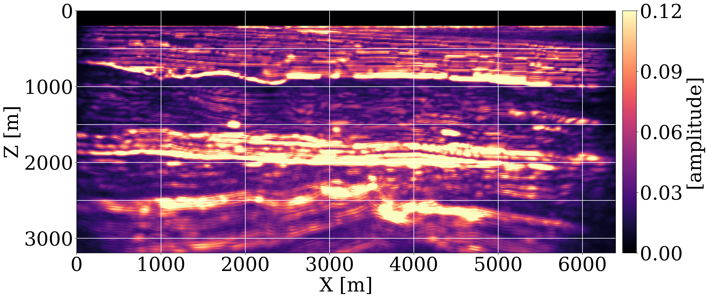
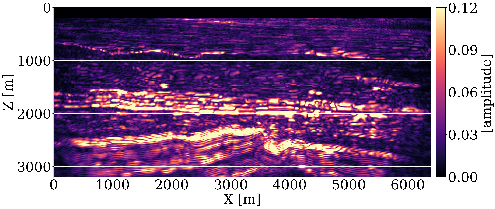

WISER: full-Waveform variational Inference via Subsurface Extensions with Refinements
Abstract
We introduce a cost-effective Bayesian inference method for full-waveform inversion (FWI) to quantify uncertainty in migration-velocity models and its impact on imaging. Our method targets inverse uncertainty due to null-space of the wave modeling operators and severe observational noise, and forward uncertainty where the uncertainty in velocity models is propagated to uncertainty in amplitude and positioning of imaged reflectivities. This is achieved by integrating generative artificial intelligence (genAI) with physics-informed common-image gathers (CIGs), which greatly reduces reliance on accurate initial migration-velocity models. In addition, we illustrate the capability of fine-tuning the generative AI networks with frugal physics-based refinements for an out-of-distribution scenario.
Amortized variational inference
Our method concerns estimation of migration-velocity models from noisy seismic data through the inversion of the wave modeling operator. Instead of seeking only a single velocity model, our method aims to draw samples from the posterior distribution of migration-velocity models conditioned on the observed shot data. In this context, we train conditional normalizing flows (CNFs) to approximate this posterior distribution. To simply the mapping between seismic image and shot data, we use common-image gathers (CIGs) as an information-preserving physics-informed summary statistics to embed the shot data, and then train the CNFs on pairs of velocity models and CIGs. After training, the inverse of CNF turns random realizations of the standard Gaussian distribution into posterior samples (velocity models) conditioned on any seismic observation that is in the same statistical distribution as the training data, shown in the upper part of the flowchart. We term this amortized inference framework WISE, short for full-Waveform variational Inference via Subsurface Extensions (Yin et al. 2023). We further propose a physics-based Refinment approach to make it WISER.
Physics-based refinement
While the trained amortized CNF can generate posterior velocity samples instantaneously at inference, the accuracy of CNFs might be deteriorated due to out-of-distribution issues — i.e., the observed data is generated by an out-of-distribution velocity model, or through a slightly different forward modeling operator (e.g. acoustic-elastic, differing source function, attenuation effect, unremoved shear wave energy, etc). To meet this challenge and bridge the so-called amortization gap, we apply a physics-based refinement approach to fine-tune the trained network. We compose a shallower invertible network with the trained CNFs, where the shallower network is initialized with random weights and acts on the latent space. Following a transfer learning scheme, we freeze the weights of the trained CNF and only update the weights of the shallower network in order for the posterior samples to fit the observed shot data. This process is shown in the lower part of the flowchart.
Downstream imaging
To understand how the uncertainty in the migration-velocity models propagates to imaged reflectors, forward uncertainty is assessed by carrying out high-frequency imaging for different posterior velocity samples, shown on the right-hand side of the flowchart. The uncertainty in the imaged reflectors is revealed in variance in both the amplitude and the positioning of the reflectors.










